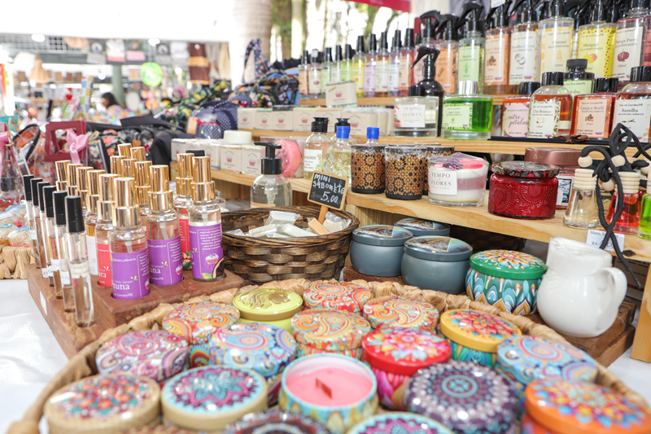
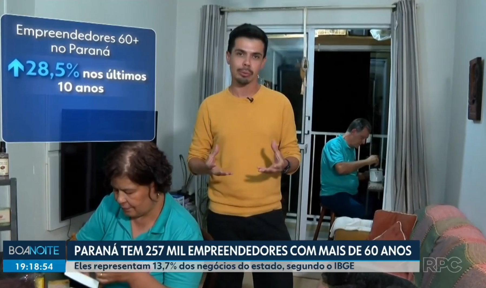
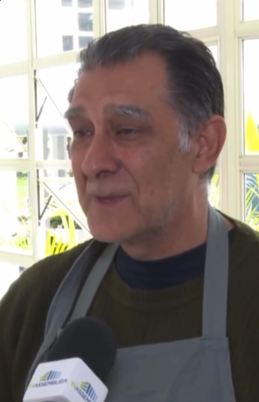
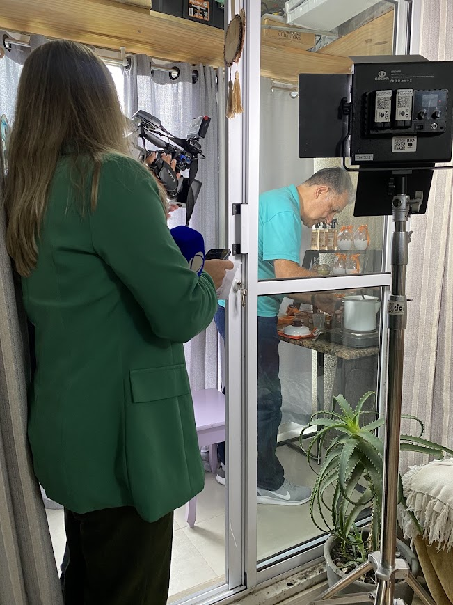

O artesanato que faz parte da vida do Centro de Curitiba
Manoel Vidigal compartilha sua experiência como artesão na Feira da Praça Osório e comenta as melhorias na região.
Ler matéria completaFEITO À MÃO, EM CURITIBA
para você, sua casa e para presentear
Conheça os nossos produtos
Descubra criações artesanais para transformar pequenos momentos da rotina em experiências especiais.
PARA VOCÊ
Nenhum produto encontrado. Experimente outra busca ou categoria.
A disponibilidade dos produtos e das fragrâncias, assim como o valor do frete, será confirmada pelo WhatsApp antes da finalização do pedido.
NOSSA HISTÓRIA
A marca Manu Saboaria nasceu durante a pandemia, a partir do desejo de levar mais bem-estar e aconchego para o dia a dia das pessoas.
Com o tempo, ampliamos nossa linha, que começou com sabonetes e águas perfumadas artesanais e passou a incluir velas aromáticas, difusores de ambiente, geleias corporais e outros produtos que exploram diferentes aromas e texturas.
Valorizamos cada etapa do nosso trabalho, da escolha das fragrâncias à apresentação das embalagens. E é nas feiras de artesanato de Curitiba que encontramos a oportunidade de compartilhar nossas criações e estar mais perto do público.
Seguimos criando com dedicação, valorizando o cuidado artesanal e desejando fazer parte de momentos importantes na vida de cada pessoa.
NA MÍDIA
Conheça algumas das reportagens e entrevistas em que a marca Manu Saboaria esteve presente.

Manoel Vidigal compartilha sua experiência como artesão na Feira da Praça Osório e comenta as melhorias na região.
Ler matéria completa
A reportagem mostra a trajetória de empreendedores com mais de 60 anos no Paraná, incluindo a experiência de Manoel Vidigal.
Assistir à reportagem
Entrevista com Manoel Vidigal durante uma feira realizada na Assembleia Legislativa do Paraná.
Ver publicação
Manu Saboaria apresenta coleção especial de Páscoa.
Ver publicaçãoEscolha os produtos, adicione-os à sacola e clique em “Enviar pedido pelo WhatsApp”. A mensagem será preparada com os itens, as quantidades, os valores e as observações do pedido. Pelo WhatsApp, nós confirmamos a disponibilidade, os aromas, o frete e as formas de pagamento antes de concluir o atendimento.
Nossa marca é de Curitiba (PR). Consulte pelo WhatsApp as opções de entrega ou retirada, o valor do frete e o prazo para seu endereço antes de confirmar o pedido.
Sim! As fotos apresentam algumas opções da coleção. Informe sua preferência no campo de observações da sacola, e nós confirmaremos a disponibilidade e ajudaremos você a escolher.
Sim! Você pode combinar produtos, escolher a apresentação e informar a quantidade desejada. Os valores e prazos são definidos de acordo com a composição escolhida. Entre em contato pelo WhatsApp para conversarmos sobre as opções.
As formas de pagamento são informadas durante o atendimento pelo WhatsApp, antes da confirmação do pedido. Não é necessário cadastrar dados de pagamento neste site.
Para preservar a qualidade e as características dos produtos, mantenha-os em local fresco, seco e arejado, protegido da luz solar direta e de fontes de calor.
No caso dos sabonetes, utilize uma saboneteira que permita o escoamento da água e mantenha-os secos entre os usos. Já as velas devem ser utilizadas sob supervisão, longe de tecidos e outros materiais inflamáveis, crianças e animais. Apague-as antes de sair do ambiente.
Comece consultando a composição e as instruções de uso do produto. Se você tem pele sensível, alergias ou alguma condição dermatológica, procure orientação profissional antes de escolher.
Não. Cada versão tem sua própria composição. Consulte as informações do produto escolhido para conhecer os ingredientes e as orientações de uso.